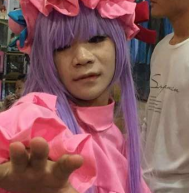

蔡臻豪，就读于上海海洋大学。身高是完全一致的150cm。自称与“魏逸霖有不共戴天之仇”，并加入魏乐，但是其于魏乐会并没有提出值得采纳的建议，只会表达“将魏逸霖囚禁于铁笼，转送公安机关，让公安机关制裁他”等毫无作用的想法。2015年11月底，暗中黑屁魏乐会某先辈，并指点江山称该先辈为魏逸霖特务。被特务揭发之后仍然硬汉不止，继续黑屁。2015年11月28日被魏乐会某神必大师出道，南大师等人先后提供支持。
| 蔡臻豪 | |
|---|---|
 不动的黑屁旋风 | |
|
姓名 |
蔡臻豪 |
|
常用ID |
16M74KA |
|
职业 |
学生 |
|
能力 |
出cos |
|
特长 |
指点江山 |
|
必杀技 |
黑屁旋风 |
|
硬度 |
★★ |
|
所属 |
车万萌二 |
目录
简介
蔡臻豪，祖籍苏北，出生于上海虹口，于垃圾本二上海海洋大学就读。在魏逸霖被出道之后，自称与其不共戴天并加入魏乐。其在魏乐并不活跃，也没有任何有建设性的建议。2015年11月底，突然暗中黑屁魏乐会某先辈，理由竟是“发魏逸霖照片的时候还说了嘻嘻二字”，可见其对恶俗完全没有了解。事后，蔡臻豪退群并迫真道歉，但是魏乐会恶俗人士在调研他的过程中发现他在不少方面都值得推敲，遂决定出道。
一路人
据信，蔡臻豪在被魏乐会辱骂退群之后，在其创建的车万萌二cos群中大肆黑屁。在得知自己被出道的消息后，一瞬回归魏乐，并“希望你们识时务”，甚至爆出富有哲学意味的语录“如果不识时务的话，咱们各修德政，然后法庭上见！”，奇妙深刻。
蔡臻豪试图通过法律手段制裁魏乐会小鬼，并通过举报干烂本站。他在贴吧中询问起诉网络人士的相关知识，并认为只要有IP就能精确定位，得到的回复却令他失望。可见他的网络知识严重匮乏，连TCP/IP协议都一知半解。而且他也并不知道本站为体制外网站，不受赵国网警控制。
马执雨曾短暂加群，据群记录显示，群内多为女性车万萌二，由于蔡臻豪混迹车万萌二圈已有一定时间，因此获得了车万萌二们的尊敬。他发一句“妹妹”，下一句就会出现“qwq”等类似字样。并且见人就叫“亲妹妹”。蔡臻豪在其群内经常作出“妹妹！你是我妹妹！萝莉是变出来的！越变越萝莉！”等发言。此群还有语c行为，可以得出他在他一手创办的萌二群内享受着男性在玩弄女性、受到女性崇拜时独有的“魏逸霖快感”。
国际网警事件
2015年11月底，蔡振豪由于曾接到过某未知恶俗小鬼的短信而回电迫真自演为某大学电脑系的黑客，甚至提出所谓网警向他警告之类的话语，然后同时使用某未知人士的电话发短信给该恶俗小鬼称网警已经介入，要求他们立即停止，然而蔡振豪所不知道的是自己就连转发500顶罪都误认为是5000定罪的高级大脑一再辩解，可惜高超的演技依然被揭露。
- 蔡振豪拨号电话：18916526152
- 蔡振豪短信电话：15001939189
- 蔡振豪本人（据称）电话：17717525334
足可见蔡振豪作为上海教父的足智多谋，甚至拥有许多的电话号码。
逸话
语录
- 现在的网络账号都是可以查明的。他们挂我不是向我挑战，是在向法律挑战。你觉得就凭他们斗得过法律吗？
- 现在很多国际惯犯都不敢保证百分之一百不被警方制服，你认为他们有那种反侦察能力吗？
- 希望你们能识时务。如果不识时务的话，咱们各修德政，然后法庭上见！
- 妹妹！你是我妹妹！萝莉是变出来的！越变越萝莉！
- 他们准备把事情发展到多大规模？是打算引起网络舆论还是引起社会舆论甚至引入政治层面？
- 我怕什么？把他们的ID调取出来放到派出所去调查，真的总归是真的，假的总归是假的。[1]
- 他们哪一个是有思想的？都是只会跟着瞎起哄的。（钦点恶俗人士）
- 他们还说什么冒着犯罪的风险去整魏逸霖，他们说这话我就觉得他们一个一个都是蠢猪笨牛。[2]（钦点恶俗人士）
- 我人正不怕影子斜，我只要紧握真理之剑，任何的负隅顽抗都是徒劳。
- 所谓善，就是说我本有恶，我想作恶，我有能力作恶，甚至有条件作恶，但是我不作恶，就是善了
- 但是伪善不一样，伪善是说我有恶，我也有条件作恶，但是我装作一般不作恶的样子，等到时机一到我再作恶。这叫伪善
- 假如一个人看上去行为不三不四，实际上做人坦坦荡荡，不能说是“伪坏人”，只能说“真好人”。而且，在一些特定情况下，有的人假装成小人或者是恶人，比如一个警察为了破案而潜入犯罪集团，我们不能说这个警察是“伪恶人”吧？只能说是真君子甚至是真英雄